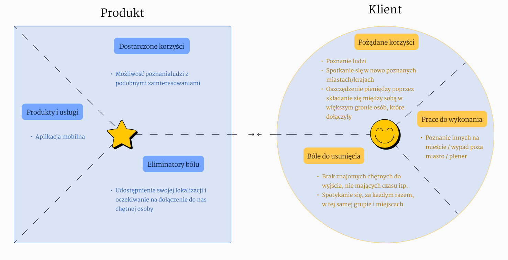
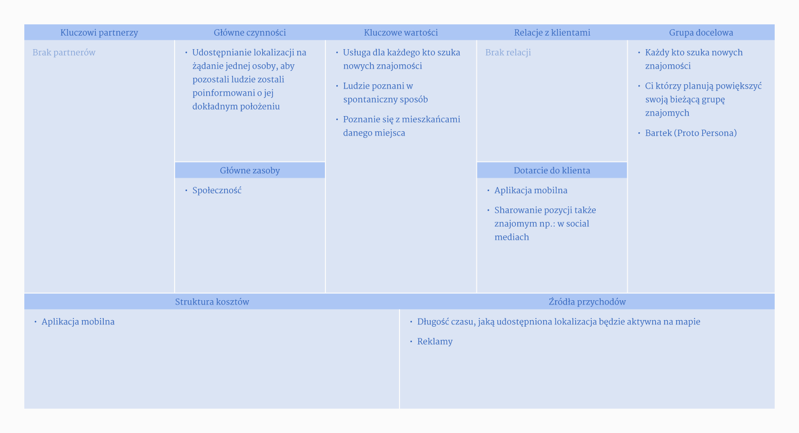
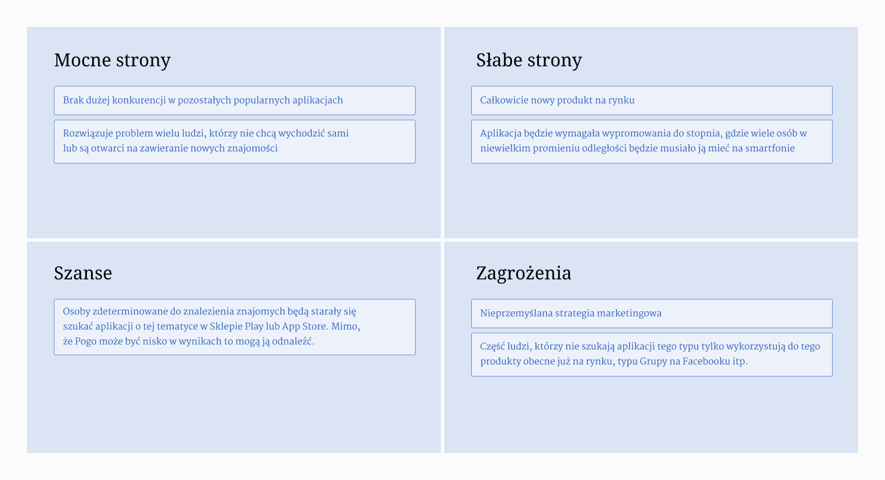

O PROJEKCIE
POGO jest projektem, mającym na celu ułatwienie zawarcia nowych znajomości, powiększenie swojej grupy przyjaciół, spędzenie z kimś czasu lub zaproszenie nowo poznanych ludzi do imprezowania.
APLIKACJA MOBILNA

POGO jest projektem, mającym na celu ułatwienie zawarcia nowych znajomości, powiększenie swojej grupy przyjaciół, spędzenie z kimś czasu lub zaproszenie nowo poznanych ludzi do imprezowania.
Celem projektu było zaprojektowanie aplikacji mobilnej, pomagającej w znajdywaniu osób chętnych do zapoznania się na żywo, bądź spędzenia razem czasu.
Pierwszym etapem było zbadanie grupy docelowej, by poznać jej styl życia towarzyskiego, czy ludzie z niej są otwarci na nowe znajomości, jak łatwo je zawierają i czy mają trudności, by wyjść z inicjatywą ze swojej strony.
Na początku zostały przeprowadzone rozmowy z pojedynczymi respondentami w celu zdobycia głębszego zrozumienia ich opinii, doświadczeń i poglądów na temat konkretnej tematyki aplikacji. Zostały one poprzedzone wcześniej przygotowaną listą pytań, które zadawano w trakcie rozmowy.
Z researchu konkurencji wynikło, że rynek nie jest nasycony aplikacjami, które łączą ludzi po zainteresowaniach. Jest ich mało i nie są wystarczająco popularne.
Znalezione aplikacje posiadają możliwość dodawania wielu zainteresowań z różnych kategorii, a zmatchowane profile pokazują się na podobnej zasadzie co w znanych aplikacjach randkowych.
Proto Persona
Student mający kilka wolnych godzin po zajęciach. Jest otwarty na poznawanie nowych ludzi. Lubi sporty zespołowe i spotkania z osobami z drużyny.
CELE I POTRZEBY
Student mający kilka wolnych godzin po zajęciach. Jest otwarty na poznawanie nowych ludzi w różnych miejscach lub na eventach. Lubi sporty zespołowe i spotkania z osobami z drużyny.
FRUSTRACJE
Odczuwa ciągle zbyt małą ilość osób, jakimi się otacza.
Design Persona
Pracuje ze znajomymi na siłowni. Lubi podróże z przyjaciółkami, szczególnie po polskich miastach. Ciekawią ją różne zakątki miejsc, do których podróżuje.
CELE I POTRZEBY
Zaznajomienie się z osobami mieszkającymi w miejscach, do których się wybiera. Chce odkrywać nowe hobby.
FRUSTRACJE
Niełatwo zagadać do obcych ludzi w nowych miejscach.




Wyszukiwanie i branie udziału w spotkaniu zostało uproszczone do krótkiej ścieżki. Będąc w trybie eksploracji, można łatwo przefiltrować typ spotkania, a następnie dokonać wyboru z poziomu mapy.
W zakładce relacji można podejrzeć oczekujące i archiwalne spotkania oraz osoby w nich uczestniczące.
Skontaktuj się ze mną
Wystarczy jedno kliknięcie, aby pomóc zmienić pomysł w produkt. Wypełnij formularz, aby udostępnić mi więcej szczegółów na temat projektu.